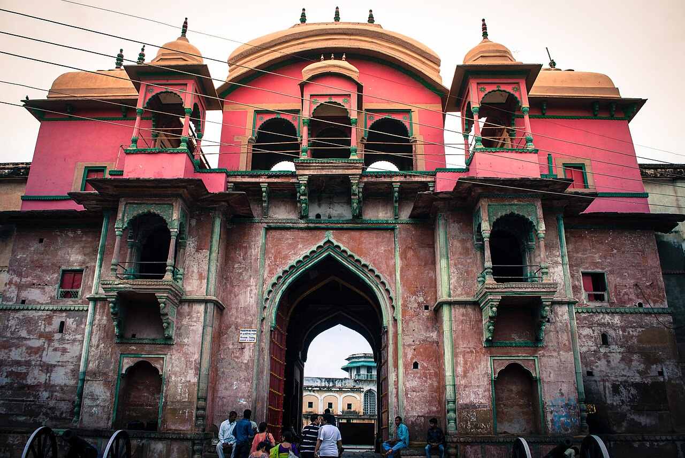
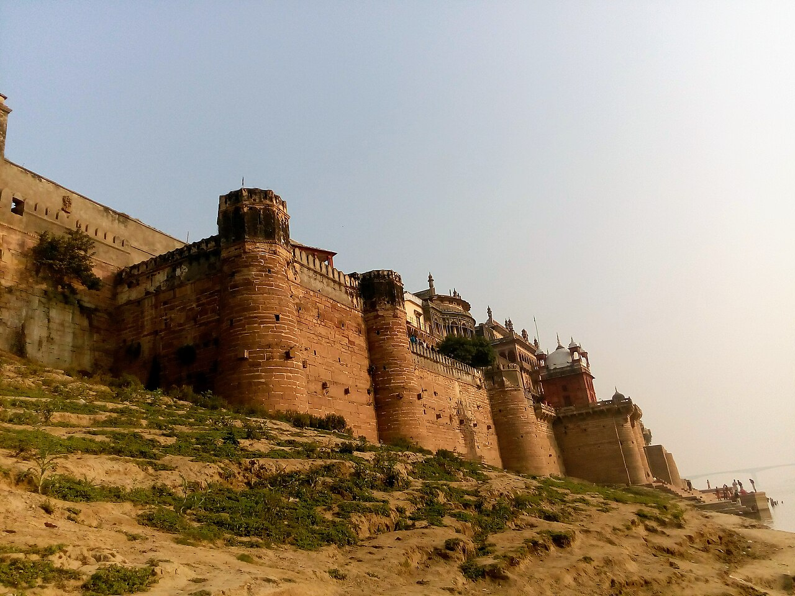

Perched commandingly on the eastern bank of the Ganges, directly across from the southern ghats of Varanasi, Ramnagar Fort presents a dramatic contrast to the dense temple architecture of the old city. Built of warm, honey-toned Chunar sandstone, this fortified riverside citadel has served for more than two and a half centuries as the official royal residence of the Kashi Naresh—the Maharajas of Benares.
Dynastic Origins: The House of Benares
The fort was founded in 1750 CE by Raja Balwant Singh, the dynamic founder of the princely state of Benares who consolidated autonomy during the declining authority of the Mughal Empire and the Nawabs of Awadh. His successor, Maharaja Chet Singh, famously fortified the structure before his historic armed confrontation with Warren Hastings, the British Governor-General of Bengal, in 1781.
Architecturally, the fort exemplifies the refined Mughal-Rajput synthesis characteristic of eighteenth-century princely courts in northern India. Imposing curved bastions, ornate overhanging carved balconies (jharokhas), shaded open-air arcades, and tranquil interior courtyards are positioned specifically to catch the cooling breeze blowing off the broad river. Within the fortress lies the private residential wing still inhabited by the titular Maharaja, alongside public museum galleries and ancient royal shrines.
Key Historical Facts
- Built By: Maharaja Balwant Singh in 1750 CE
- Material: Chunar cream sandstone, quarried from the hills of neighboring Mirzapur
- Royal Title: Official residence of the Kashi Naresh (historically regarded by citizens as the representative of Shiva on earth)
- Museum: Saraswati Bhawan Museum (rare vintage automobiles, palanquins, ivory carvings, royal weaponry, and astronomical clocks)
- Living Culture: Epicenter of the month-long Ramnagar Ramlila, recognized by UNESCO as Intangible Cultural Heritage
Saraswati Bhawan: An Eccentric Princely Cabinet of Curiosities
A portion of the palace compound is open to the public as the Saraswati Bhawan Museum. Far from a conventional modern museum, the collection offers an evocative, atmospheric glimpse into the eclectic lifestyle and ceremonial panoply of an eighteenth- and nineteenth-century Indian royal court. Among its prize exhibits are ornately carved ivory palanquins, gold and silver howdahs (elephant saddles), and ceremonial carriages manufactured in London and Calcutta.
The armory houses an extraordinary assortment of jewel-encrusted talwars (swords), Mughal matchlocks, flintlock pistols, and daggers with hilted jade grips. A particular highlight is an intricate astronomical clock designed and constructed in 1852 by the royal court astronomer of Benares, B. Mulchand. The clock meticulously displays the hour, day, week, month, and phase of the moon, alongside astrological zodiac signs and planetary alignments without requiring electrical power.


The UNESCO-Recognized Ramnagar Ramlila
During the autumn month of Ashwin (September–October), the entire town surrounding the fort transforms into the staging ground for the world-renowned Ramnagar Ramlila. Established in the 1830s by Maharaja Udit Narayan Singh, this extraordinary dramatic performance unfolds over thirty-one consecutive evenings, dramatizing Goswami Tulsidas's Ramcharitmanas.
Unlike modern theatrical productions, the Ramnagar Ramlila employs no artificial microphones, electric stage lights, or recorded tracks. The action moves across physical locations representing Ayodhya, Lanka, and the forest, illuminated solely by flickering torches (mashals). The Maharaja of Benares attends every single evening mounted upon a decorated royal tusker elephant, reaffirming the centuries-old symbiotic relationship between sacred drama, monarchy, and urban community.
Visitor Information & Guidelines
- Museum Timings
- Open daily from 10:00 to 17:00. Closed on national holidays and select royal festival days.
- Entry Fee
- Modest entrance fee charged at the ticket window outside the main archway; separate fee for non-Indian nationals.
- Photography
- Photography is allowed in the outer courtyard and riverfront terraces. Strictly forbidden inside the Saraswati Bhawan Museum halls.
- How to Reach
- Accessible by road across the modern Samne Ghat Bridge (approx. 14 km from central Varanasi) or via a scenic boat trip across the river directly from Assi Ghat.
Local Delicacy: Don't leave Ramnagar without sampling the legendary rabri and lassi served in traditional earthenware clay kulhads at the historic sweet shops located directly in the plaza outside the fort gates.